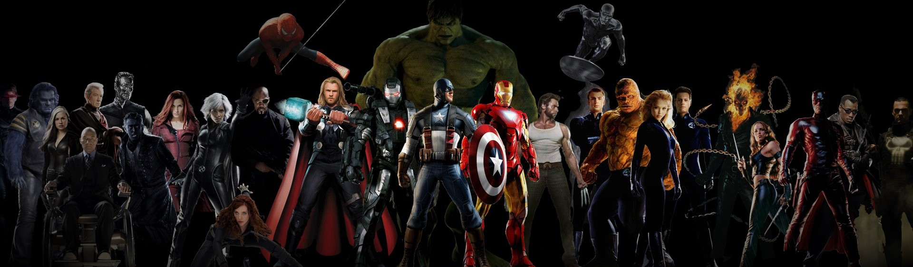
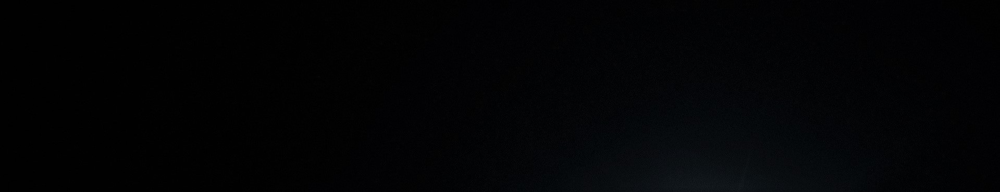

The Avengers
Marvel's The Avengers[6] (classified under the name Marvel Avengers Assemble in the United
Kingdom and Ireland),[3][7] or simply The Avengers, is a 2012 American superhero film based on
the Marvel Comics superhero team of the same name, produced by Marvel Studios and distributed by
Walt Disney Studios Motion Pictures.[N 1] It is the sixth film in the Marvel Cinematic Universe
(MCU). The film was written and directed by Joss Whedon and features an ensemble cast that
includes Robert Downey Jr., Chris Evans, Mark Ruffalo, Chris Hemsworth, Scarlett Johansson, and
Jeremy Renner as the titular Avengers team, alongside Tom Hiddleston, Clark Gregg, Cobie
Smulders, Stellan Skarsgård, and Samuel L. Jackson. In the film, Nick Fury, director of the spy
agency S.H.I.E.L.D., recruits Tony Stark, Steve Rogers, Bruce Banner, and Thor to form a team
that must stop Thor's brother Loki from subjugating Earth.
The film's development began when Marvel Studios received a loan from Merrill Lynch in April
2005. After the success of the film Iron Man in May 2008, Marvel announced that The Avengers
would be released in July 2011. With the signing of Johansson in March 2009, the film was pushed
back for a 2012 release. Whedon was brought on board in April 2010 and rewrote the original
screenplay by Zak Penn. Production began in April 2011 in Albuquerque, New Mexico, before moving
to Cleveland, Ohio, in August and New York City in September. The film was converted to 3D in
post-production.
The Avengers premiered on April 11, 2012, at Hollywood's El Capitan Theatre and was released in
the United States on May 4, 2012. The film received positive reviews from critics, as well as
numerous awards and nominations including Academy Award and BAFTA nominations for achievements
in visual effects. It set or tied numerous box office records, including the biggest opening
weekend in the United States and Canada. The Avengers grossed over $1.5 billion worldwide and
became the third-highest-grossing film of all time, as well as the highest-grossing film of
2012. It is the first Marvel production to generate $1 billion in ticket sales. In 2017, it was
featured as one of the 100 greatest films of all time in Empire magazine's poll of The 100
Greatest Movies.[8]
Avengers: Age of ultron
Avengers: Age of Ultron is a 2015 American superhero film based on the Marvel Comics superhero
team the Avengers, produced by Marvel Studios and distributed by Walt Disney Studios Motion
Pictures. It is the sequel to 2012's The Avengers and the eleventh film in the Marvel Cinematic
Universe (MCU). The film was written and directed by Joss Whedon and features an ensemble cast
that includes Robert Downey Jr., Chris Hemsworth, Mark Ruffalo, Chris Evans, Scarlett Johansson,
Jeremy Renner, Don Cheadle, Aaron Taylor-Johnson, Elizabeth Olsen, Paul Bettany, Cobie Smulders,
Anthony Mackie, Hayley Atwell, Idris Elba, Stellan Skarsgård, James Spader, and Samuel L.
Jackson. In the film, the Avengers fight Ultron, an artificial intelligence obsessed with
causing human extinction.
The sequel was announced in May 2012, after the successful release of The Avengers. Whedon, the
director of the first film, was brought back on board in August and a release date was set. By
April 2013, Whedon had completed a draft of the script, and casting began in June with the
re-signing of Downey. Second unit filming began in February 2014 in South Africa with principal
photography taking place between March and August 2014. The film was primarily shot at
Shepperton Studios in Surrey, England, with additional footage filmed in Italy, South Korea,
Bangladesh, New York City, and various locations around England. While in post-production, the
film was converted to 3D and over 3,000 visual effects shots were added. With an estimated net
production budget of $365 million, it is the second most expensive film ever made.
Avengers: Age of Ultron premiered in Los Angeles on April 13, 2015, and was released on May 1,
2015, in the United States, in 3D and IMAX 3D. The film received generally positive reviews from
critics and grossed over $1.4 billion worldwide, becoming the fourth-highest-grossing film of
2015 as well as the fifth-highest-grossing film of all time.
Avengers: Infinity War
Avengers: Infinity War is a 2018 American superhero film based on the Marvel Comics superhero
team the Avengers, produced by Marvel Studios and distributed by Walt Disney Studios Motion
Pictures. It is the sequel to 2012's The Avengers and 2015's Avengers: Age of Ultron, and the
nineteenth film in the Marvel Cinematic Universe (MCU). The film is directed by Anthony and Joe
Russo, written by Christopher Markus and Stephen McFeely, and features an ensemble cast
including Robert Downey Jr., Chris Hemsworth, Mark Ruffalo, Chris Evans, Scarlett Johansson,
Benedict Cumberbatch, Don Cheadle, Tom Holland, Chadwick Boseman, Paul Bettany, Elizabeth Olsen,
Anthony Mackie, Sebastian Stan, Danai Gurira, Letitia Wright, Dave Bautista, Zoe Saldana, Josh
Brolin, and Chris Pratt. In the film, the Avengers and the Guardians of the Galaxy attempt to
stop Thanos from amassing the all-powerful Infinity Stones, and wiping out half of all life in
the universe.
The film was announced in October 2014 as Avengers: Infinity War – Part 1. The Russo brothers
came on board to direct in April 2015 and by May, Markus and McFeely had signed on to write the
script for the film, which drew inspiration from Jim Starlin's 1991 The Infinity Gauntlet comic
and Jonathan Hickman's 2013 Infinity comic. In 2016, Marvel shortened the title to Avengers:
Infinity War. Filming began in January 2017 at Pinewood Atlanta Studios in Fayette County,
Georgia, with a large cast consisting mostly of actors reprising their roles from previous MCU
films, including Brolin as Thanos. The production lasted until July 2017, shooting back-to-back
with a direct sequel, Avengers: Endgame. Additional filming took place in Scotland, England, the
Downtown Atlanta area, and New York City. With an estimated budget in the range of $316–400
million, it is one of the most expensive films ever made.
Avengers: Infinity War held its world premiere on April 23, 2018 in Los Angeles and was released
in the United States on April 27, 2018, in IMAX and 3D. The film received praise for the
performances of the cast (particularly Brolin's) and the emotional weight of the story, as well
as the visual effects and action sequences. It was the fourth film and the first superhero film
to gross over $2 billion worldwide, breaking numerous box office records and becoming the
highest-grossing film of 2018, as well as the fourth-highest-grossing film of all time and in
the United States and Canada. The film received Academy Award and BAFTA nominations for
achievements in visual effects.
